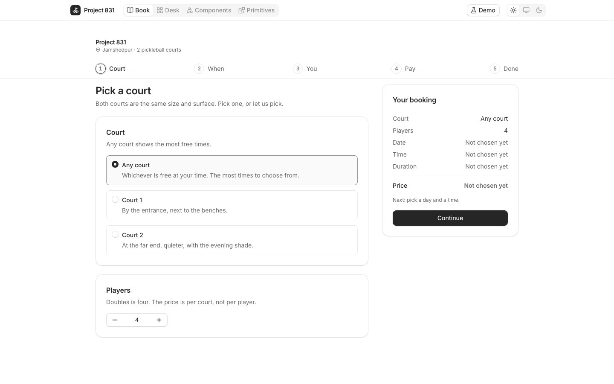

Court booking on coss ui
Project 831 is a two-court pickleball venue in Jamshedpur that I co-founded. People book courts on WhatsApp, on the web and at the desk, all on software I built. coss ui is Cal.com's open-source component library, built on Base UI.
Project 831's booking product, rebuilt end to end on Cal.com's design system: all 55 coss ui components installed through the shadcn CLI and left unmodified, with the parts coss doesn't have built as headless primitives in Base UI's conventions.

What it is
Two sides of one product. The customer's: court, time, details, payment, done, with part payments and a 15-minute hold that is real. It blocks the slot for everyone, counts down, and releases itself. The venue's: the day's courts, every booking's money, bookings, inbox, programmes, members, payments, team and settings.
Every state of the product, 74 of them, is one click away from the Demo menu, so nobody has to engineer an empty venue or a failed payment to see what it does. Nothing is faked to look finished. The store adds 300 to 600 milliseconds of latency so every skeleton is real, and ?offline=1 shows the error states.

The parts coss doesn't have
SlotGrid. One tab stop per grid with roving focus, Up and Down that understand the geometry, Page keys between periods, and unavailable cells that stay focusable and say why. It drives both the booking grid and the desk grid.Recurrence. A weekly rule with exceptions, validation that names the problem, start and end minutes, and a summary localised through Intl.TimeZone. A hook that gives any Base UI Combobox a zone search: city, area, long name or offset, diacritics folded. Time stays in the venue's zone in the engine and shows in the viewer's on the screen, with Intl only, and the tests cross the 1 November clock change.A fourth, a month grid with a status and a price on every day, is built and waiting to merge.
Time and state, the thing I obsessed over
A booking product lives or dies on what a cell tells you. Every slot says what to do next: paid, due, blocked, empty with a price. The hold is a real hold. One tab stop per grid, and disabled cells stay focusable and say why they are disabled. States are never colour alone: every desk block has an icon, a word and a border or texture, and every chart has a table for screen readers.
The policy is one pure function. decidePayment(policy, slot, customer) decides every option a customer sees; the checkout, the desk and the tests all call it.
A fix merged into coss ui
While building this I found that coss ui's Calendar ignored its locale in one place, the month dropdown. The fix is one line and it is merged. The second, on the dark theme's muted text, which measures about 4.42 to 1 against the background and misses AA, is next.